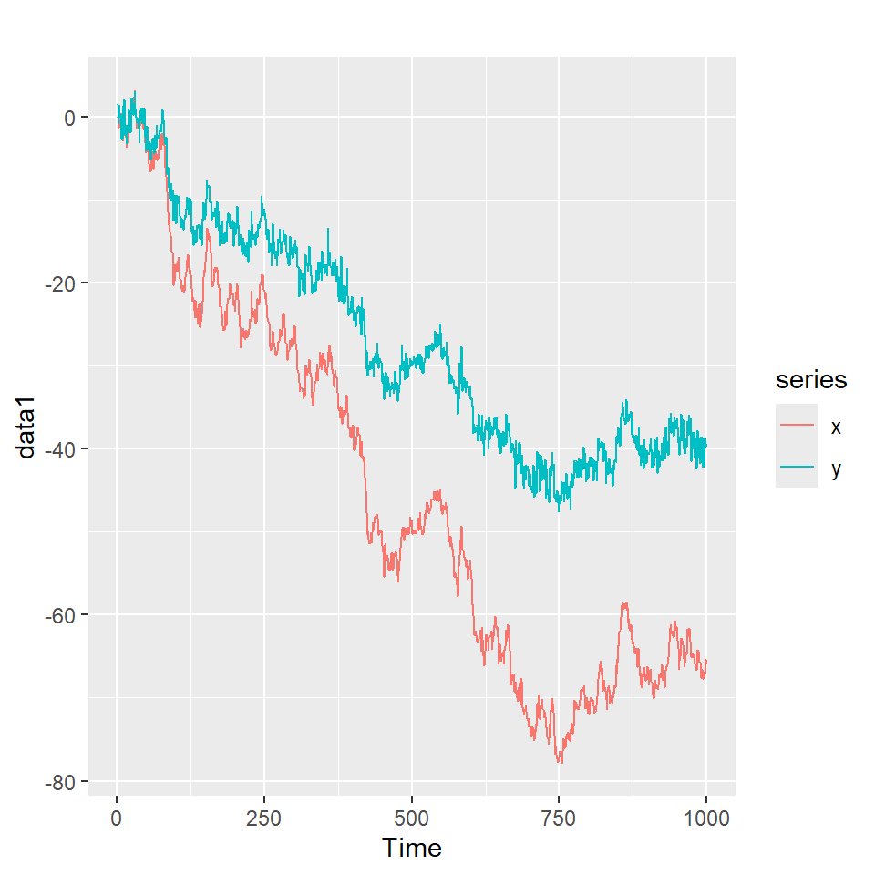

![]()
coint_sim <- function(phi=0.6,t=1000){
a <- rnorm(t)
b <- rnorm(t)
x <- cumsum(a)
y <- phi*x + b
data <- ts(data.frame(x,y))
return(data)
}
data1 <- coint_sim(phi=0.6, t=1000)
autoplot(data1)
Contenido
Procesos cointegrados
Pruebas de hipótesis para cointegración
Modelos de corrección del error
Modelos de corrección del error vectorial (VECM)
Definición: Sea \(X_t\) una serie multivariada de \(k\) dimensión. Se dice que \(X_t\) es cointegrado de orden \((d, b)\), denotado por \(X_t \sim CI(d,b)\), si:
El vector \(\alpha\) es llamado vector de cointegración.
Ejemplo:
\[\left. \begin{eqnarray} X_t &=& X_{t-1} + a_t = \sum_{i=1}^t a_t \\ Y_{t} &=& 0.6 X_t + b_t \end{eqnarray}\right.\]
Note que
Contenido
Procesos cointegrados
Pruebas de hipótesis para cointegración
Modelos de corrección del error
Modelos de corrección del error vectorial (VECM)
Procedimiento de Engle y Granger
Sea \(X_t=(X_{1,t},...,X_{k,t})'\) una serie multivariada y cada una de las series es \(I(1)\).
Considere \(X_t=(X_{1,t},\dot{X}_{2,t}')'\) con \(\dot{X}_{2,t}= (X_{2,t},...,X_{k,t})'\) y la regresión
\[X_{1,t}= \beta_0+ \beta_1' \dot{X}_{2,t}+u_t,\] con el fin de obtener los residuales \(u_t\) y realizar la prueba de Dickey-Fuller aumentado para comprobar si \(u_t\) es \(I(1)\) o \(I(0)\).
Se tiene 3 series macroeconómicas (en logarítmo) del Reino Unido del cuarto trimestre, 1966 al segundo trimestre de 1991.
lc: Índice de consumo
li: Nivel del ingreso
lw: La riqueza del país
Se ve claramente que no son series estacionarias.
###############################################
# Augmented Dickey-Fuller Test Unit Root Test #
###############################################
Test regression trend
Call:
lm(formula = z.diff ~ z.lag.1 + 1 + tt + z.diff.lag)
Residuals:
Min 1Q Median 3Q Max
-0.044714 -0.006525 0.000129 0.006225 0.045353
Coefficients:
Estimate Std. Error t value Pr(>|t|)
(Intercept) 0.7976591 0.3547775 2.248 0.0270 *
z.lag.1 -0.0758706 0.0338880 -2.239 0.0277 *
tt 0.0004915 0.0002159 2.277 0.0252 *
z.diff.lag1 -0.1063957 0.1006744 -1.057 0.2934
z.diff.lag2 0.2011373 0.1012373 1.987 0.0500 .
z.diff.lag3 0.2998586 0.1020548 2.938 0.0042 **
---
Signif. codes: 0 '***' 0.001 '**' 0.01 '*' 0.05 '.' 0.1 ' ' 1
Residual standard error: 0.01307 on 89 degrees of freedom
Multiple R-squared: 0.1472, Adjusted R-squared: 0.09924
F-statistic: 3.071 on 5 and 89 DF, p-value: 0.01325
Value of test-statistic is: -2.2389 3.7382 2.5972
Critical values for test statistics:
1pct 5pct 10pct
tau3 -4.04 -3.45 -3.15
phi2 6.50 4.88 4.16
phi3 8.73 6.49 5.47\(H_0: \pi=0\) no se rechaza, pues \(\tau=-2.24>-3.15\).
Luego se comprueba \(H_0: \beta_1=\pi=0\) con \(\Phi_3=2.5972<5.47\).
Se concluye que \(lc_t \sim I(1)\).
###############################################
# Augmented Dickey-Fuller Test Unit Root Test #
###############################################
Test regression trend
Call:
lm(formula = z.diff ~ z.lag.1 + 1 + tt + z.diff.lag)
Residuals:
Min 1Q Median 3Q Max
-0.044111 -0.010578 0.000137 0.009169 0.056450
Coefficients:
Estimate Std. Error t value Pr(>|t|)
(Intercept) 1.1157144 0.5858229 1.905 0.0601 .
z.lag.1 -0.1049535 0.0554035 -1.894 0.0614 .
tt 0.0006854 0.0003458 1.982 0.0506 .
z.diff.lag1 -0.1215088 0.1070525 -1.135 0.2594
z.diff.lag2 0.0890314 0.1090094 0.817 0.4163
z.diff.lag3 -0.0705492 0.1064929 -0.662 0.5094
---
Signif. codes: 0 '***' 0.001 '**' 0.01 '*' 0.05 '.' 0.1 ' ' 1
Residual standard error: 0.01777 on 89 degrees of freedom
Multiple R-squared: 0.09647, Adjusted R-squared: 0.04571
F-statistic: 1.901 on 5 and 89 DF, p-value: 0.1021
Value of test-statistic is: -1.8943 5.6312 1.9979
Critical values for test statistics:
1pct 5pct 10pct
tau3 -4.04 -3.45 -3.15
phi2 6.50 4.88 4.16
phi3 8.73 6.49 5.47\(H_0: \pi=0\) no se rechaza, pues \(\tau=-1.89>-3.15\).
Luego se comprueba \(H_0: \beta_1=\pi=0\) con \(\Phi_3=1.9979<5.47\).
Se concluye que \(li_t \sim I(1)\).
###############################################
# Augmented Dickey-Fuller Test Unit Root Test #
###############################################
Test regression trend
Call:
lm(formula = z.diff ~ z.lag.1 + 1 + tt + z.diff.lag)
Residuals:
Min 1Q Median 3Q Max
-0.166827 -0.021565 0.007698 0.027117 0.078108
Coefficients:
Estimate Std. Error t value Pr(>|t|)
(Intercept) 0.2878077 0.2512347 1.146 0.2550
z.lag.1 -0.0231893 0.0196669 -1.179 0.2415
tt 0.0004415 0.0002145 2.058 0.0425 *
z.diff.lag1 0.1592894 0.1064650 1.496 0.1381
z.diff.lag2 -0.0007941 0.1086003 -0.007 0.9942
z.diff.lag3 0.0558477 0.1075377 0.519 0.6048
---
Signif. codes: 0 '***' 0.001 '**' 0.01 '*' 0.05 '.' 0.1 ' ' 1
Residual standard error: 0.04208 on 89 degrees of freedom
Multiple R-squared: 0.08329, Adjusted R-squared: 0.03179
F-statistic: 1.617 on 5 and 89 DF, p-value: 0.1636
Value of test-statistic is: -1.1791 1.9115 2.1351
Critical values for test statistics:
1pct 5pct 10pct
tau3 -4.04 -3.45 -3.15
phi2 6.50 4.88 4.16
phi3 8.73 6.49 5.47\(H_0: \pi=0\) no se rechaza, pues \(\tau=-1.18>-3.15\).
Luego se comprueba \(H_0: \beta_1=\pi=0\) con \(\Phi_3=2.1351<5.47\).
Se concluye que \(lw_t \sim I(1)\).
Se puede sacar diferencia a las 3 series y comprobar que efectivamente son \(I(0)\).
Concluimos que:
lc.eq <- lm(lc ~ li + lw, data=ukcons)
li.eq <- lm(li ~ lc + lw, data=ukcons)
lw.eq <- lm(lw ~ li + lc, data=ukcons)
error.lc <- ts(resid(lc.eq), start=c(1967,2),
end=c(1991,2), frequency=4)
error.li <- ts(resid(li.eq), start=c(1967,2),
end=c(1991,2), frequency=4)
error.lw <- ts(resid(lw.eq), start=c(1967,2),
end=c(1991,2), frequency=4)
###############################################
# Augmented Dickey-Fuller Test Unit Root Test #
###############################################
Test regression none
Call:
lm(formula = z.diff ~ z.lag.1 - 1 + z.diff.lag)
Residuals:
Min 1Q Median 3Q Max
-0.042881 -0.009733 0.000985 0.008867 0.042400
Coefficients:
Estimate Std. Error t value Pr(>|t|)
z.lag.1 -0.4665 0.1126 -4.141 7.59e-05 ***
z.diff.lag -0.2366 0.1013 -2.335 0.0217 *
---
Signif. codes: 0 '***' 0.001 '**' 0.01 '*' 0.05 '.' 0.1 ' ' 1
Residual standard error: 0.0148 on 93 degrees of freedom
Multiple R-squared: 0.3427, Adjusted R-squared: 0.3286
F-statistic: 24.25 on 2 and 93 DF, p-value: 3.346e-09
Value of test-statistic is: -4.1414
Critical values for test statistics:
1pct 5pct 10pct
tau1 -2.6 -1.95 -1.61
Jarque Bera Test
data: error.lc
X-squared = 0.66447, df = 2, p-value = 0.7173
###############################################
# Augmented Dickey-Fuller Test Unit Root Test #
###############################################
Test regression none
Call:
lm(formula = z.diff ~ z.lag.1 - 1 + z.diff.lag)
Residuals:
Min 1Q Median 3Q Max
-0.044558 -0.009281 -0.001382 0.010989 0.048775
Coefficients:
Estimate Std. Error t value Pr(>|t|)
z.lag.1 -0.4587 0.1130 -4.059 0.000103 ***
z.diff.lag -0.2406 0.1017 -2.364 0.020135 *
---
Signif. codes: 0 '***' 0.001 '**' 0.01 '*' 0.05 '.' 0.1 ' ' 1
Residual standard error: 0.01612 on 93 degrees of freedom
Multiple R-squared: 0.3395, Adjusted R-squared: 0.3253
F-statistic: 23.9 on 2 and 93 DF, p-value: 4.198e-09
Value of test-statistic is: -4.059
Critical values for test statistics:
1pct 5pct 10pct
tau1 -2.6 -1.95 -1.61
Jarque Bera Test
data: error.li
X-squared = 0.065267, df = 2, p-value = 0.9679
###############################################
# Augmented Dickey-Fuller Test Unit Root Test #
###############################################
Test regression none
Call:
lm(formula = z.diff ~ z.lag.1 - 1 + z.diff.lag)
Residuals:
Min 1Q Median 3Q Max
-0.32322 -0.06238 0.00554 0.06636 0.28561
Coefficients:
Estimate Std. Error t value Pr(>|t|)
z.lag.1 -0.21469 0.07911 -2.714 0.00793 **
z.diff.lag -0.32469 0.09841 -3.299 0.00137 **
---
Signif. codes: 0 '***' 0.001 '**' 0.01 '*' 0.05 '.' 0.1 ' ' 1
Residual standard error: 0.1034 on 93 degrees of freedom
Multiple R-squared: 0.2472, Adjusted R-squared: 0.231
F-statistic: 15.27 on 2 and 93 DF, p-value: 1.845e-06
Value of test-statistic is: -2.7137
Critical values for test statistics:
1pct 5pct 10pct
tau1 -2.6 -1.95 -1.61
Jarque Bera Test
data: error.lw
X-squared = 3.253, df = 2, p-value = 0.1966Se concluye que los residuales de los 3 modelos son \(I(0)\) de acuerdo a la prueba de Dickey-Fuller aumentado (ADF).
Note que no nos interesa buscar evidencias de que sean no correlacionados, sino que los residuales sean \(I(0)\).
La relación entre series cointegradas de \(I(1)\) es denominada relación de largo plazo.
Mientras que, la relación entre series de \(I(0)\) es denominada relación de corto plazo.
Contenido
Procesos cointegrados
Pruebas de hipótesis para cointegración
Modelos de corrección del error
Modelos de corrección del error vectorial (VECM)
\[Y_t = \beta_0 + \beta_1 X_t + z_t \] con \(z_t \sim I(0)\).
\[\nabla Y_t = \beta_0 + \beta_1 \nabla X_t + \nabla z_t\] pero este modelo únicamente contempla su relación de corto plazo.
\[\nabla Y_t = \beta_0 + \beta_1 \nabla X_t + z_t - z_{t-1}\]
\[\nabla Y_t = \beta_0 + \beta_1 \nabla X_t - \gamma \hat{z}_{t-1} + z_t\] donde \(\hat{z}_{t}=Y_t-\hat{\beta}_0-\hat{\beta}_1 X_t\) son los residuales obtenidos del modelo de regresión.
En este caso, \(\gamma\) es un coeficiente que mide la velocidad del ajuste y que tanto el desequilibrio es corregido.
Note que:
\[\begin{aligned} \nabla Y_t &= \psi_0 + \gamma_1\hat{z}_{t-1} + \sum^{K_1}_{i=1}\psi_{1,i}\nabla X_{t-i} + \sum^{L_1}_{i=1} \psi_{2,i}\nabla Y_{t-i} + \epsilon_{1,t} \\ \nabla X_t &= \xi_0 + \gamma_2\hat{z}_{t-1} + \sum^{K_2}_{i=1}\xi_{1,i}\nabla Y_{t-i} + \sum^{L_2}_{i=1} \xi_{2,i}\nabla X_{t-i} + \epsilon_{2,t} \end{aligned}\]
donde
\(\hat{z}_t\) es el error del modelo de regresión:
\[Y_t = \beta_0 + \beta_1 X_t + z_t\] \(\epsilon_{1,t}\) y \(\epsilon_{2,t}\) son ruidos blancos.
Se tiene 3 series macroeconómicas (en logarítmo) del Reino Unido del cuarto trimestre, 1966 al segundo trimestre de 1991.
lc: Índice de consumo
li: Nivel del ingreso
lw: La riqueza del país
Se ve claramente que no son series estacionarias.
Vamos a estudiar la relación de lc y li.
\[Y_t = \beta_0 + \beta_1 X_t + z_t \]
x <- lc
y <- li
reg <- lm(y ~ x)
error <- residuals(reg)
error.DF <- ur.df(error, lags=1, type='none')
summary(error.DF)
###############################################
# Augmented Dickey-Fuller Test Unit Root Test #
###############################################
Test regression none
Call:
lm(formula = z.diff ~ z.lag.1 - 1 + z.diff.lag)
Residuals:
Min 1Q Median 3Q Max
-0.038869 -0.011455 -0.000857 0.011170 0.059315
Coefficients:
Estimate Std. Error t value Pr(>|t|)
z.lag.1 -0.20434 0.07624 -2.680 0.008673 **
z.diff.lag -0.36370 0.09550 -3.808 0.000248 ***
---
Signif. codes: 0 '***' 0.001 '**' 0.01 '*' 0.05 '.' 0.1 ' ' 1
Residual standard error: 0.01609 on 95 degrees of freedom
Multiple R-squared: 0.2717, Adjusted R-squared: 0.2564
F-statistic: 17.72 on 2 and 95 DF, p-value: 2.878e-07
Value of test-statistic is: -2.6802
Critical values for test statistics:
1pct 5pct 10pct
tau1 -2.6 -1.95 -1.61error.lagged <- error[-c(98, 99)]
dy <- diff(y)
dx <- diff(x)
diff.dat <- data.frame(embed(cbind(dy, dx), 2),error.lagged)
colnames(diff.dat) <- c('dy', 'dx', 'dyl1', 'dxl1','error.lagged')
diff.dat dy dx dyl1 dxl1 error.lagged
1 0.0190 0.0129 -0.0021 0.0062 -0.0086558614
2 0.0272 0.0218 0.0190 0.0129 -0.0168097165
3 -0.0117 0.0089 0.0272 0.0218 -0.0104056407
4 0.0162 0.0257 -0.0117 0.0089 -0.0044917762
5 0.0009 -0.0396 0.0162 0.0257 -0.0248819875
6 -0.0184 0.0191 0.0009 -0.0396 -0.0337761931
7 0.0009 0.0041 -0.0184 0.0191 0.0057903650
8 0.0122 -0.0061 0.0009 0.0041 -0.0312594143
9 0.0103 0.0101 0.0122 -0.0061 -0.0343627700
10 -0.0053 -0.0003 0.0103 0.0101 -0.0162065578
11 0.0011 0.0093 -0.0053 -0.0003 -0.0157684830
12 0.0037 -0.0004 0.0011 0.0093 -0.0207755545
13 0.0434 0.0162 0.0037 -0.0004 -0.0287563371
14 0.0018 0.0151 0.0434 0.0162 -0.0246657658
15 -0.0012 0.0003 0.0018 0.0151 0.0029160968
16 -0.0268 -0.0062 -0.0012 0.0003 -0.0100279695
17 0.0306 0.0204 -0.0268 -0.0062 -0.0115208980
18 0.0050 0.0162 0.0306 0.0204 -0.0322670429
19 0.0136 0.0107 0.0050 0.0162 -0.0215861789
20 0.0187 0.0139 0.0136 0.0107 -0.0324043163
21 0.0606 0.0215 0.0187 0.0139 -0.0292520984
22 -0.0177 0.0129 0.0606 0.0215 -0.0241244508
23 0.0200 0.0123 -0.0177 0.0129 0.0154823422
24 0.0204 0.0359 0.0200 0.0123 -0.0148135820
25 0.0185 -0.0097 0.0204 0.0359 -0.0068236493
26 0.0089 0.0079 0.0185 -0.0097 -0.0214774229
27 0.0061 -0.0066 0.0089 0.0079 0.0064939310
28 -0.0283 -0.0192 0.0061 -0.0066 0.0076801479
29 -0.0169 0.0026 -0.0283 -0.0192 0.0202245743
30 0.0382 0.0091 -0.0169 0.0026 0.0106719963
31 0.0018 0.0061 0.0382 0.0091 -0.0087667171
32 0.0199 -0.0064 0.0018 0.0061 0.0205477860
33 -0.0438 -0.0005 0.0199 -0.0064 0.0163915738
34 0.0113 -0.0119 -0.0438 -0.0005 0.0425407145
35 -0.0133 -0.0044 0.0113 -0.0119 -0.0007710714
36 0.0127 0.0057 -0.0133 -0.0044 0.0221484246
37 -0.0150 0.0048 0.0127 0.0057 0.0131447088
38 0.0326 0.0068 -0.0150 0.0048 0.0202790679
39 -0.0249 0.0044 0.0326 0.0068 0.0005922124
40 -0.0281 -0.0205 -0.0249 0.0044 0.0265525004
41 -0.0129 -0.0048 -0.0281 -0.0205 -0.0026437839
42 0.0191 0.0115 -0.0129 -0.0048 -0.0107270051
43 0.0465 0.0235 0.0191 0.0115 -0.0189401496
44 -0.0036 0.0228 0.0465 0.0235 -0.0110690742
45 0.0302 0.0010 -0.0036 0.0228 0.0124848623
46 0.0249 0.0201 0.0302 0.0010 -0.0133777015
47 0.0040 -0.0030 0.0249 0.0201 0.0158458703
48 0.0093 0.0104 0.0040 -0.0030 0.0211196628
49 0.0091 0.0545 0.0093 0.0104 0.0280489475
50 0.0058 -0.0410 0.0091 0.0545 0.0271940939
51 0.0507 0.0143 0.0058 -0.0410 -0.0169212449
52 -0.0349 0.0124 0.0507 0.0143 0.0289123127
53 0.0020 -0.0230 -0.0349 0.0124 0.0656493890
54 0.0162 0.0120 0.0020 -0.0230 0.0186416789
55 -0.0041 -0.0161 0.0162 0.0120 0.0430995283
56 0.0023 0.0111 -0.0041 -0.0161 0.0475823895
57 -0.0194 0.0028 0.0023 0.0111 0.0592028840
58 -0.0046 0.0001 -0.0194 0.0028 0.0506645306
59 0.0078 -0.0017 -0.0046 0.0001 0.0285305316
60 -0.0124 -0.0035 0.0078 -0.0017 0.0238328887
61 0.0171 0.0049 -0.0124 -0.0035 0.0332928167
62 -0.0104 0.0155 0.0171 0.0049 0.0243103156
63 0.0046 0.0100 -0.0104 0.0155 0.0366258172
64 0.0084 0.0145 0.0046 0.0100 0.0110911796
65 0.0200 0.0077 0.0084 0.0145 0.0059268973
66 -0.0036 0.0151 0.0200 0.0077 0.0001686879
67 0.0074 0.0000 -0.0036 0.0151 0.0126501905
68 0.0066 -0.0018 0.0074 0.0000 -0.0056938759
69 0.0075 0.0117 0.0066 -0.0018 0.0017061241
70 0.0023 -0.0083 0.0075 0.0117 0.0100636950
71 0.0141 0.0144 0.0023 -0.0083 0.0061394846
72 -0.0102 0.0116 0.0141 0.0144 0.0165438390
73 0.0280 0.0029 -0.0102 0.0116 0.0165832724
74 0.0000 0.0178 0.0280 0.0029 -0.0049432951
75 0.0117 0.0086 0.0000 0.0178 0.0202250630
76 0.0063 0.0207 0.0117 0.0086 0.0028446405
77 0.0324 0.0254 0.0063 0.0207 0.0061473577
78 -0.0068 0.0037 0.0324 0.0254 -0.0077647068
79 0.0088 0.0108 -0.0068 0.0037 -0.0001659839
80 -0.0026 0.0070 0.0088 0.0108 -0.0105787684
81 0.0221 0.0170 -0.0026 0.0070 -0.0123241933
82 0.0105 0.0224 0.0221 0.0170 -0.0217591909
83 0.0151 0.0148 0.0105 0.0224 -0.0162584709
84 0.0021 0.0281 0.0151 0.0148 -0.0276304633
85 0.0297 0.0050 0.0021 0.0281 -0.0269816012
86 0.0094 0.0213 0.0297 0.0050 -0.0523192346
87 0.0173 0.0105 0.0094 0.0213 -0.0275013757
88 0.0033 0.0054 0.0173 0.0105 -0.0388992971
89 0.0319 0.0108 0.0033 0.0054 -0.0318517936
90 -0.0023 -0.0008 0.0319 0.0108 -0.0338245060
91 0.0055 0.0080 -0.0023 -0.0008 -0.0124699310
92 0.0096 0.0004 0.0055 0.0080 -0.0139887884
93 -0.0013 0.0082 0.0096 0.0004 -0.0163002142
94 0.0139 -0.0064 -0.0013 0.0082 -0.0070907855
95 0.0066 -0.0064 0.0139 -0.0064 -0.0163974970
96 -0.0163 -0.0029 0.0066 -0.0064 0.0037516436
97 0.0087 -0.0012 -0.0163 -0.0029 0.0166007843
Call:
lm(formula = dy ~ error.lagged + dyl1 + dxl1, data = diff.dat)
Residuals:
Min 1Q Median 3Q Max
-0.039263 -0.010137 0.000049 0.007601 0.051158
Coefficients:
Estimate Std. Error t value Pr(>|t|)
(Intercept) 0.007745 0.001897 4.084 9.38e-05 ***
error.lagged -0.337795 0.079879 -4.229 5.49e-05 ***
dyl1 -0.448730 0.109085 -4.114 8.41e-05 ***
dxl1 0.276004 0.130244 2.119 0.0367 *
---
Signif. codes: 0 '***' 0.001 '**' 0.01 '*' 0.05 '.' 0.1 ' ' 1
Residual standard error: 0.01641 on 93 degrees of freedom
Multiple R-squared: 0.2098, Adjusted R-squared: 0.1843
F-statistic: 8.231 on 3 and 93 DF, p-value: 6.475e-05
Call:
lm(formula = dx ~ error.lagged + dyl1 + dxl1, data = diff.dat)
Residuals:
Min 1Q Median 3Q Max
-0.046820 -0.007315 0.001416 0.006588 0.051670
Coefficients:
Estimate Std. Error t value Pr(>|t|)
(Intercept) 0.006742 0.001496 4.508 1.91e-05 ***
error.lagged -0.119781 0.062995 -1.901 0.0603 .
dyl1 0.167672 0.086028 1.949 0.0543 .
dxl1 -0.203078 0.102715 -1.977 0.0510 .
---
Signif. codes: 0 '***' 0.001 '**' 0.01 '*' 0.05 '.' 0.1 ' ' 1
Residual standard error: 0.01294 on 93 degrees of freedom
Multiple R-squared: 0.14, Adjusted R-squared: 0.1123
F-statistic: 5.048 on 3 and 93 DF, p-value: 0.002767\[\begin{aligned} \nabla Y_t &= 0.008 -0.338 \hat{z}_{t-1} -0.4487 \nabla Y_{t-1} -0.276 \nabla X_{t-1}+ \epsilon_{1,t} \\ \nabla X_t &= 0.007 -0.12 \hat{z}_{t-1} + 0.168 \nabla Y_{t-1} -0.203 \nabla X_{t-1} + \epsilon_{2,t} \end{aligned}\]
Contenido
Procesos cointegrados
Pruebas de hipótesis para cointegración
Modelos de corrección del error
Modelos de corrección del error vectorial (VECM)
\[\begin{aligned} \nabla Y_t &= \psi_0 + \gamma_1\hat{z}_{t-1} + \sum^K_{i=1}\psi_{1,i}\nabla X_{t-i} + \sum^L_{i=1} \psi_{2,i}\nabla Y_{t-i} + \epsilon_{1,t} \\ \nabla X_t &= \xi_0 + \gamma_2\hat{z}_{t-1} + \sum^K_{i=1}\xi_{1,i}\nabla Y_{t-i} + \sum^L_{i=1} \xi_{2,i}\nabla X_{t-i} + \epsilon_{2,t} \end{aligned}\]
donde \(\hat{z}_t =Y_t -\hat{\beta}_0 + \hat{\beta}_1 X_t\) es el error del modelo de regresión:
Existe una extensa literatura de generalizaciones de VARMA, VECM y métodos de estimaciones alternativas.
Por ejemplo, el paquete BVAR.
Para replicar los ejemplos de esta presentación, necesitan estos paquetes: